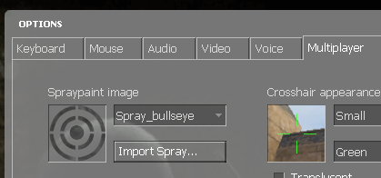
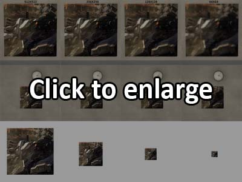
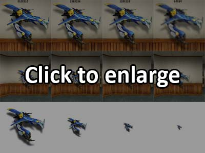
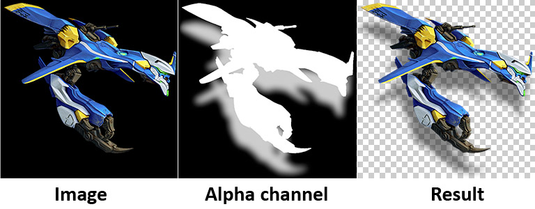
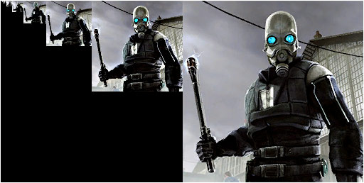
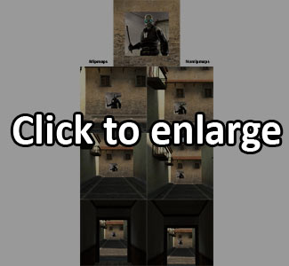

What are source spraylogos? Spraylogos are images you can place on most surfaces in source multiplayer games with the exception of models. Spraylogos appear in-game as roughly a meter square in area. They all conform to this area, but they can use different pixel Resolutions and transparency. Spraylogos can also be animated, however they do have their Limits. They are placed by a bound key (most commonly "t") and usually make a spraypaint noise. Here are some ingame examples.
VTFEdit
And an image editing program (for this tutorial I will be working in photoshop).
Spraylogos are selected in the multiplayer options tab and are stored in this directory:
For mods where the above directory fails to work try:
The spraylogo selector looks like this:
Each game has several default sprays which are always listed first, then any custom ones. SPRAYLOGO FILES A spraylogo is 2 files: A VTF file and a VMT file. The VTF is the image texture and the VMT allows the texture to be read by the game. For those familiar with VMT files, it Should be stated that in the case of spraylogos, the VMT is only used for the texture path and nothing more. All vmt commands are overrided in game so you can't set any special shaders, change the area, or change an animated spraylogos animation rate. Spraylogos are mostly made from Targa files (.tga) which are converted to VTF format.
Spraylogo resolutions are fairly low, however as of 2010 several games have been updated with the capability of higher resolutions. They must be valid power of 2 sizes in order to work. The most common resolution is 256X256 pixels. Here is an example of 2 spraylogos at four different resolutions and how they appear in game:
 As you can see, I have demonstrated how these resolutions look like up close, at distance and the actual size. *512X512 Is currently only available for Counter-Strike:Source, Day of Defeat:Source, Garrysmod, and Team Fortress 2.
Spraylogos are capable of having areas of transparency. These areas are defined by an alpha channel. Note that spraylogos with transparency are larger in filesize, making their use in animation very limited.
Spraylogos with animation continually loop and run at approximately 6 frames per second.
Mipmaps are a series of progressively smaller power of 2 image copies of the original which are generated usually when you make your VTF file. Each one of these smaller images has been resampled and usually had a sharpen filter added. Mipmaps are a computationally low-cost method of enhancing images and how they look and scale at distances as they fade between oneanother. When creating your VTF files Mipmaps should be used in all still spraylogos as they will look much better at distances. The only time you really need to omit mipmaps are when you need to have more frames in your animated sprays (as mipmaps do take up filesize).
Here we have an example of mipmaps made for a 256X256 spraylogo. These mipmaps have been created using box filter settings with an unsharpen mask filter to enhance them. Here we have an example of how a spray with mipmaps vs a spray without mipmaps:
Although the difference looks subtle in this demonstration, in motion the difference is quite noticeable with distinct "jaggy" looking pixels. If your spray has outlined artwork this gets even worse looking. There are several different mipmap sharpen options available in VTFEdit but we will cover this later.
Now since we have covered the basics we will now proceed to image preparation and creation of your spraylogo.
{kind=link}
{kind=link}
{kind=link}
{kind=link}